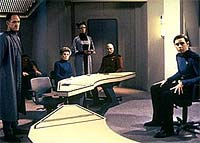
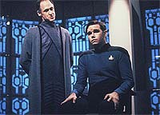
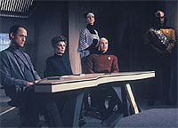
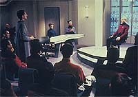

|
MANCHETE
DO EPISÓDIO
Grandes
atuações e roteiro brilhante
suportam análise sobre autoritarismo
Episódio
anterior | Próximo
episódio
Sinopse:
Data Estelar: 44769.2.
Uma explosão ocorre nos motores de dobra da Enterprise e um oficial
Klingon que está a bordo da nave em um programa de intercâmbio é
suspeito de ter causado o desastre, ao fornecer aos Romulanos os
esquemas do motor.
Uma investigação é iniciada, e a almirante Norah Satie, renomada
por expor uma conspiração alienígena contra a Frota Estelar,
deixa sua aposentadoria para ajudar. Com base em evidências
levantadas por Worf, Satie rapidamente extrai uma confissão do
Klingon, J'Ddan, sobre sua participação no contrabando de
diagramas para os Romulanos, mas ele continua a negar
responsabilidade pela explosão.
O auxiliar Betazóide de Satie, Sabin, confirma que J'Ddan está
falando a verdade, o que leva a almirante a acreditar que há um
outro conspirador a bordo da nave.
 Enquanto
ela interroga vários membros da tripulação com quem J'Ddan teve
contato, na esperança de encontrar o outro sabotador, Sabin usa
seus poderes Betazóides para detectar que um tripulante, Simon
Tarses, está mentindo. Ele conclui que trata-se do homem procurado.
Satie insiste que Picard restrinja os movimentos de Tarses a bordo,
mas o capitão recusa a fazê-lo sem evidências mais substanciais
de que o rapaz de fato esteve envolvido na explosão.
Data e Geordi continuam a estudar o motor acidentado e acabam por
concluir que a explosão foi um acidente, mas Satie permanece
acreditando que Tarses é um traidor. Após forçar Tarses a
confessar que ele é de fato parte Romulano, a almirante pede a
ajuda de Worf para conduzir uma abrangente investigação das
atividades do tripulante e de seus colegas. Picard começa a ficar
cada vez mais desconfortável com a investigação e decide ir
conversar com Tarses pessoalmente.
Um diálogo com o abalado mas leal tripulante convence Picard de sua
inocência, e o capitão pede a Satie que interrompa a investigação.
Satie não só se recusa como diz a Picard que a investigação irá
aumentar, e que a Frota Estelar está mandando um almirante para
observar.
Irada pela relutância do capitão de colaborar com as investigações,
Satie convoca Picard para ser interrogado, como um possível
traidor, em uma audiência observada pelo almirante da Frota.
Durante o interrogatório, Picard faz um singelo pedido a ela para
que desista daquela "caça às bruxas", lembrando frases
sobre liberdade feitas pelo pai de Satie, um respeitado juíz da
Federação. Consumida pela obsessão de achar o traidor, Satie se
revolta com Picard por citar seu pai e então parte para acusações
diretas contra o capitão.
 Satie
começa a relembrar algumas das experiências passadas de Picard
para ilustrar a idéia de que ele pode ser um traidor. Conforme suas
acusações vazias tornam-se mais e mais agressivas, a sala cheia de
expectadores está em silêncio, chocada, e o almirante deixa a audiência,
em total desaprovação. Logo depois há um recesso, e Worf informa
seu capitão de que o almirante encerrou as investigações e Satie
já deixou a nave. Worf pede desculpas por ter ajudado a almirante
aposentada a continuar sua perseguição, e Picard o perdoa,
explicando que o preço da liberdade é a constante vigilância.
Comentários:
"The
Drumhead" é um episódio que dependeu totalmente dos
atores e do roteiro para se sustentar. Felizmente, nenhum dos dois
decepcionou, transformando o que poderia ser uma história tediosa
em uma bela peça dramática.
Usando o desenrolar das investigações, o episódio mostra o quanto
é fácil chegarmos ao abuso de autoridade. O que começa como uma
razoável e necessária investigação termina como um tribunal que
beirava os métodos da Inquisição.
Julgamentos com platéia, tom agressivo, confissões induzidas,
estratégias mentirosas --tudo é considerado válido por Satie e
seus colegas na hora de "extrair" a verdade de um
suspeito. Uma vez que a almirante teve a certeza de que Tarses era
um comparsa de J'Ddan, não mediu esforços para enquadrá-lo.
 Picard
foi o verdadeiro fio condutor da história. Ele soube mostrar qual a
posição ética e quais os limites a serem respeitados pelos
procedimentos judiciais. É um discurso politicamente correto? É,
como é um padrão em quase todos os episódios de A Nova Geração.
Mas não é esse estereótipo que faz dele errado.
Esse episódio fala mais alto especialmente aos interessados em
Direito e Legislação. Até onde um advogado pode e deve ir para
incriminar um acusado? As respostas estão todas lá, personificadas
na razão de Picard. Ele soube quando uma investigação era necessária
e também soube quando parar.
Satie, em sua obsessão por encontrar pêlo em casca de ovo, acabou
perdendo totalmente a compostura, em sua atitude desesperada de
atirar acusações a quem quer que entrasse em sua frente. Sua
agressividade traz o momento mais tocante do episódio, quando
Picard é obrigado a confrontar as conseqüências de sua assimilação
pelos Borgs, que causaram a morte de 11 mil oficiais da Frota
Estelar e a destruição de 39 naves.
O sofrimento interior do capitão, que até então só tentava
trazer Satie de volta à razão, ao ser brutalmente acusado é
absurdamente claro e sensibilizador. Ponto para mais uma brilhante
atuação de Patrick Stewart.
Satie não era uma pessoa que não era mal-intencionada, mas apenas
alguém que havia se perdido em meio à obsessão por eliminar os
inimigos da Federação --até os que não existiam de fato. E
Picard também mostra isso, ao não se dar ao trabalho de revidar os
ataques à almirante. Ele sabe o quão claro está para todos que
Satie está desequilibrada, e por isso nunca entra em confronto
direto com ela.
 Para
sustentar uma história como essa, só mesmo com um roteiro
brilhante. Até porque não havia nada mais para chamar a atenção
da audiência --nem uma nova nave, nem um planeta, nem ação,
batalhas, nada. Apenas diálogos e mais diálogos, todos ambientados
na Enterprise. Se não é um segmento de incrível valor
"televisivo", é uma grande aquisição do ponto de vista
da dramaturgia. Quase como teatro na televisão. Produções como
essa não são para qualquer um.
Citações:
Satie - "Just
because there was no sabotage, doesn't mean there isn't a conspiracy
on this ship."
("Só porque não houve sabotagem, não quer dizer que não há
uma conspiração nesta nave.")
Picard (citando o juíz Aaron Satie) - "For the first link
of chain is forged, the first speech censored, the first thought
forbidden, the first freedom denied, chains us all irrevocably."
("Quando o primeiro elo da corrente é forjado, o primeiro
discurso censurado, o primeiro pensamento proibido, a primeira
liberdade negada, ele nos acorrenta a todos,
irrevogavelmente.")
Picard - "Villains who dwell their moustaches are easy to
spot. Those who cloth themselves in good deeds are well camouflaged."
("Vilões que enrolam seus bigodes são fáceis de identificar.
Aqueles que se vestem de boas intenções estão bem
camuflados.")
Trivia:
 "The Drumhead",
um episódio barato que foi feito para economizar dinheiro,
transformou-se em uma das melhores coisas já produzidas na saga de Jornada
nas Estrelas. Sem o apoio de efeitos especiais, e baseado apenas
no excelente roteiro escrito por Jeri Taylor, "The Drumhead"
foi inspirado em um esboço de Ron Moore chamado "It Can't
Happen Here", e traz ecos da investigação de Picard em "Coming
of Age", referências a abdução de Picard pelos Borgs
em "The Best of Both Worlds", referências também
sobre os invasores parasitas de "Conspiracy",
sobre o escândalo do espião Romulano Selok "T'Pel" de "Data's
Day", e ainda o episódio desenvolve uma boa intriga
entre Klingons e Romulanos. Tudo isso com um orçamento US$ 250 mil
abaixo do normal!
"The Drumhead",
um episódio barato que foi feito para economizar dinheiro,
transformou-se em uma das melhores coisas já produzidas na saga de Jornada
nas Estrelas. Sem o apoio de efeitos especiais, e baseado apenas
no excelente roteiro escrito por Jeri Taylor, "The Drumhead"
foi inspirado em um esboço de Ron Moore chamado "It Can't
Happen Here", e traz ecos da investigação de Picard em "Coming
of Age", referências a abdução de Picard pelos Borgs
em "The Best of Both Worlds", referências também
sobre os invasores parasitas de "Conspiracy",
sobre o escândalo do espião Romulano Selok "T'Pel" de "Data's
Day", e ainda o episódio desenvolve uma boa intriga
entre Klingons e Romulanos. Tudo isso com um orçamento US$ 250 mil
abaixo do normal!
O episódio é o terceiro da Nova
Geração a ser dirigido por Jonathan Frakes, sendo que dois
foram nesta temporada ("Reunion"
e "The Drumhead") e um na temporada anterior ("The
Offspring").
Após
25 anos de Jornada, neste episódio é explicado que a Federação
tem uma "Carta Magna", denominada como "Constituição".
A
nave que traz a almirante Satie para a Enterprise é a Cochrane, uma
nave da classe Oberth, como a USS Grisson, de "Jornada nas
Estrelas III", ou a USS Tsiolkovsky, de "The
Naked Now". O nome da nave, claro, é uma refência a
Zefram Cochrane, criador da dobra espacial. Cochrane já havia sido
mencionado no episódio do terceiro ano "Ménage à Troi".
Neste
episódio é a vez de Picard agir como advogado, algo que já foi
feito por Riker em "Angel One",
da primeira temporada, e "The Measure
of a Man", do segundo ano.
Aqui
descobrimos que Picard assumiu o comando da Enterprise-D na data
estelar 41124, sendo que a nave foi comissionada em 40759.5. O
primeiro registro no diário do capitão tem a data de 41153.7.
E
neste episódio também é citado que a Frota perdeu 39 naves e 11
mil oficiais na batalha de Wolf 359 contra os Borgs, conforme
eventos vistos em "The Best of Both Worlds".
A
almirante Norah Satie é interpretada pela experiente atriz Jean
Simmons. Jean nasceu em 31 de janeiro de 1929, em Londres. Começou
sua carreira como atriz aos 14 anos, no filme "Give Us the Moon".
Sua interpretação ao lado de Laurence Oivier em "Hamlet"
lhe valeu uma indicação ao Oscar de melhor atriz codjuvante. Em
1985 ela atuou na minissérie de TV "North and Soul", que
contava com Jonathan Frakes (Riker) no elenco. Jean Simmons, hoje
uma septuagenária, residente em Santa Monica, EUA, diz para quem
quer ouvir que sempre foi uma grande fã de Jornada.
Ficha
técnica:
Escrito por Jeri Taylor
Direção de Jonathan Frakes
Exibido em 29/04/1991
Produção: 095
Elenco:
Patrick Stewart como
Jean-Luc Picard
Jonathan Frakes como William Thomas Riker
Brent Spiner como Data
LeVar Burton como Geordi La Forge
Michael Dorn como Worf
Gates McFadden como Beverly Crusher
Marina Sirtis como Deanna Troi
Elenco convidado:
Jean Simmons
como almirante Norah Satie
Bruce French como Sabin Genestra
Spencer Garrett como Simon Tarses
Henry Woronicz como o Klingon J'Ddan
Earl Billings como o almirante Thomas Henry
Ann Shea como Nelle Tore
Episódio
anterior | Próximo
episódio
|